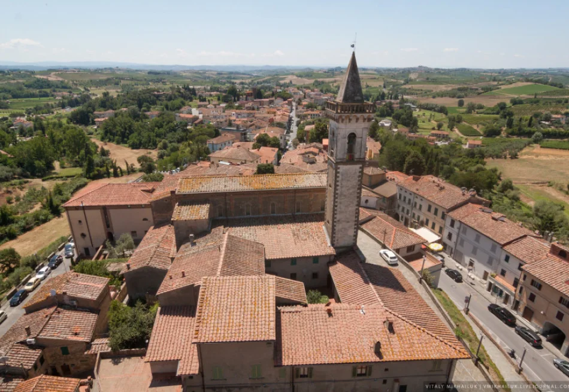

Leonardo da Vinci
Leonardo di ser Piero da Vinci - Italian artist and scientist, inventor, writer, musician.
.webp)
about
Леона́рдо ди сер Пье́ро да Ви́нчи — итальянский художник и учёный, изобретатель, писатель, музыкант
Леонардо [15 апреля 1452 г. – 2 мая 1519 г.] – автор гениальных произведений, таких как «Тайная вечеря», «Джоконда», «Мадонна в скалах» и других. О личности Леонардо уже более 5 веков слагают легенды, которые, переплетаясь с достоверными фактами биографии, создают удивительный образ гения.
Leonardo di ser Piero da Vinci - Italian artist and scientist, inventor, writer, musician
Leonardo is the author of brilliant works such as “The Last Supper”, “La Gioconda”, “Madonna of the Rocks” and others. Legends have been made about Leonardo’s personality for more than 5 centuries, which, intertwined with reliable biographical facts, create an amazing image of a genius.
History
В селении Анкиано среди оливковых рощ скрывается дом, где родился и до 14 лет жил Леонардо.
In the village of Anchiano, among the olive groves, hides the house where Leonardo was born and lived until he was 14 years old.